A TTS (Text-to-Speech) model converts written text into natural-sounding spoken audio. State-of-the-art TTS models often have an LLM-backbone architecture, and of course this LLM autoregressive decoding takes most of the computation. In this sense, optimizing TTS inference looks similar to optimizing LLM inference at first glance: both have autoregressive decoding, KV cache, CUDA Graph, and continuous batching. But practically speaking, TTS serving is not just one text-token decode loop. A single request may pass through reference-audio encoding, multi-layer codec-token generation, vocoder decoding, and streaming audio stitching — and many of the biggest wins land outside the LLM backbone.
| Model | Mode | Speedup (perf vs vanilla) |
|---|---|---|
| Higgs | streaming / non-streaming | ~1.9–2.5× |
| MOSS-TTS-Local-v1.5 | non-streaming | ~2.3–3.4× |
| MOSS-TTS-Local-v1.5 | streaming | ~2.6–3.4× (plateaus at high concurrency) |
In this blog, we break down the mechanisms that make our TTS pipeline fast: the bottlenecks we hit, the host-to-device pitfalls, and the architectural trade-offs we made. We focus on two TTS models with distinct architectures: Higgs from Boson AI and MOSS-TTS-Local-v1.5 from MOSI AI.
TTS Pipeline and Prerequisites
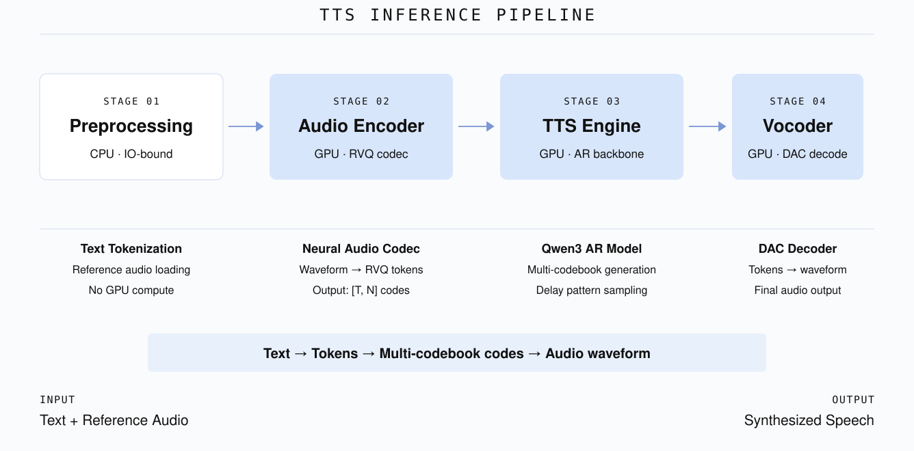
Unlike serving a chat LLM with a single autoregressive loop, TTS inference could be decomposed into four stages:
TTS Decoding Stages
Preprocessing (CPU): Text tokenization and reference-audio loading, purely IO-bound and involves no GPU compute.
Audio Encoder (GPU): An autoregressive model can only process discrete tokens, not continuous values. The audio encoder compresses audio waves into a low-rate sequence of discrete RVQ token grids (shape
[T, N], whereTis codec frames andNis RVQ layers, as discussed later). These tokens capture the timbre and prosody of the reference voice — the "how to sound" conditioning signal that the TTS engine will follow. You can find more details in Codec Audio Encoding.TTS Engine (GPU): The core autoregressive stage. The engine generates output speech as codec-token IDs rather than text-token IDs. Different models fill the multi-layer codec grid differently. Delay-pattern models such as Higgs and MOSS-TTS-v1.5 first generate in a delayed step × codebook grid; after undelay, diagonal groups become aligned back to
[T, N]codec frames for the vocoder. Non-delayed models such as FishAudio S2 Pro and MOSS-TTS-Local-v1.5 instead construct each frame more directly: a large backbone provides temporal context per frame, and a smaller inner module fills the codebook layers within each frame. This codec-token generation stage takes most GPU time, and it is where model-specific scheduling, CUDA Graph, and async decode land.Vocoder (GPU): The vocoder runs the reverse direction: it maps generated codec tokens back into a continuous audio waveform. Per-call compute is usually lightweight, but under high concurrency multiple AR loops can finish simultaneously and queue at the vocoder; streaming behavior also varies by vocoder's design.
A simplified data flow is: Text + Reference Audio → RVQ encoding → multi-layer codec tokens generation → audio waveform. In many TTS systems, audio encoding and vocoder decoding are two directions of the same audio tokenizer model: audio-to-codec-token for the encoder, and codec-token-to-audio for the vocoder. But for other models, audio encoder and vocoder may be completely different models.
To better understand these stages, we need to introduce several essential concepts.
Codec Token, Codebook, and RVQ Layer
To discuss multi-codebook generation clearly, we first need a simple visual object: the step × codebook grid. The horizontal axis is the autoregressive decode step, the vertical axis is the codebook or RVQ layer, and each cell is a sampled codec token at one step. Special cells such as BOC and EOC mark frame boundaries rather than real audio content.
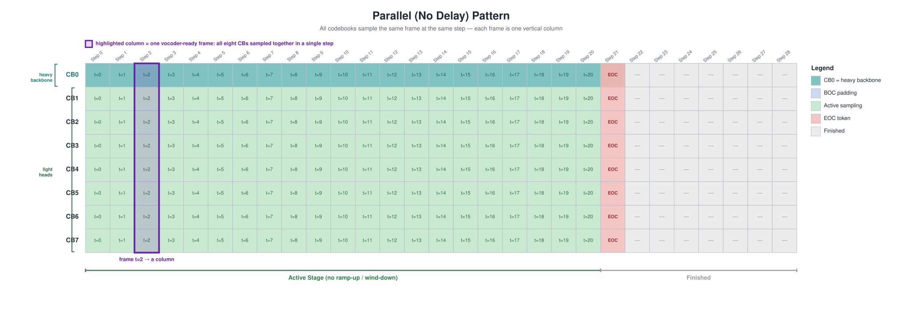
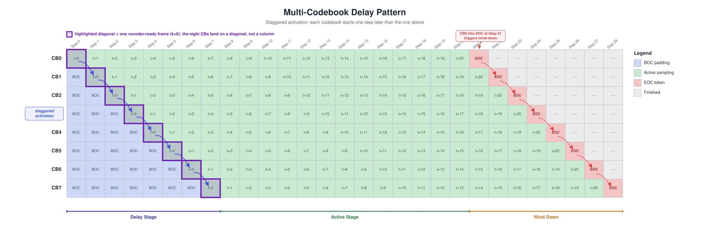
1. Codec token, codebook, and RVQ layer. As we said, text LLMs consume discrete token IDs from a finite vocabulary. TTS needs the same interface for audio: a codec token is an integer ID that represents a slice of sound. A codebook is the static vocabulary of one layer — in Higgs, each layer's codebook has roughly 4,096 possible IDs, each mapped to an embedding vector. An RVQ layer is the quantizer stage that owns one such codebook. Higgs has \(N = 8\) RVQ layers, so each aligned audio unit (frame) ultimately needs 8 sampled IDs, one from each layer. Importantly, 4,096 is the size of one layer's codebook (its number of candidate IDs), not the length of the generated sequence — a layer emits one ID per frame, so over a full utterance it produces hundreds of codec tokens drawn from those 4,096 candidates. In the diagram, each codec token is one grid cell, and each RVQ layer is a row of grid cells. Each row has one shared codebook.
2. RVQ (Residual Vector Quantization). How to encode audio waves into codec tokens is an art. The trending technique is Residual Vector Quantization (Zeghidour et al., 2021). For one frame of audio, encoding it into a single integer ID can only approximate the audio signal coarsely. RVQ stacks multiple quantizers in series: \(L_0\) quantizes the coarse signal first, \(L_1\) quantizes the residual error left by \(L_0\), \(L_2\) quantizes what \(L_1\) still missed, and so on. Each layer captures progressively finer detail. We tend to assume that \(L_0\) encodes coarse structure (pitch, rhythm, energy), while deeper layers encode timbre and high-frequency texture. Decoding sums all layer contributions to reconstruct the audio.
In this sense, one frame of audio can be encoded into a list of codec tokens, and the length of the list is the number of RVQ layers. We tend to lay it out vertically, so the shape of the codec tokens for one frame is [1, N]. In a non-delayed grid, this frame is exactly one vertical column: all codebooks at step \(k\) carry tokens for the same audio time \(t=k\). In the backward process, a list of [1, N] codec tokens can be decoded back to a single frame of audio. Thus, the hierarchical residual mechanism makes the order of the generated codec tokens matter.
If all layers sample independently at the same time, [1, N] tokens are generated together with only one forward pass, which means higher layers cannot adapt to what lower layers just emitted. The residual mechanism is broken, so no wonder it degrades the audio quality. On the other side, if we generate the codec token for \(L_0\) in the first forward pass, then the codec token for \(L_1\) in the second forward pass, and so on, quality improves but latency grows roughly with the number of layers. Every multi-layer TTS system has to navigate this trade-off, and the delay pattern is the codec token generation policy Higgs uses to do so. We will discuss it in the next section. Meanwhile, FishAudio S2 Pro and MOSS-TTS-Local-v1.5 solve this problem without delay by separating the backbone from a lighter inner module: the backbone provides temporal context per frame, and the inner module fills the codebook layers. The exact division of labor differs — S2 Pro's backbone samples \(L_0\) itself (Dual AR), while MOSS-TTS-Local's backbone only produces hidden states and delegates all codebook sampling to its local transformer.
3. Global step and codec frame. We use the word frame several times, and can basically treat it as a unit of audio wave. A 10-second audio wave at 25 fps has roughly 250 such aligned codec frames. Frame and step are roughly equivalent in the context of TTS inference: each timestep ultimately produces a vertical list of [1, N] codec tokens (\(\{L_0, L_1, \ldots, L_{N-1}\}\)), which then gets decoded back to a single frame of audio. Roughly speaking, in each global step for Higgs the LM backbone forwards once and produces its logits, then each active RVQ layer's output head samples one ID from those logits over its ~4,096-entry codebook. One global step therefore writes at most 8 IDs. It is just like an LLM using an LM head to sample one text token from the logits — except that in Higgs we have to use multiple heads to complete the whole frame, the [1, N] codec tokens.
In this sense, when passed to the vocoder, a codec frame has to be formed into a column of [1, N] on the step × codebook grid, as shown in Figure 2. But on the original step × codebook grid, frames can be laid out differently. Without the delay pattern, a vocoder-ready codec frame \(k\) is exactly the vertical column \(\{L_0[k], L_1[k], \ldots, L_N[k]\}\) of the original grid. But with the delay pattern, layer \(i\) is shifted by \(i\) steps, so the same frame is no longer a column during generation; it lands on a diagonal: \(\{L_0[k], L_1[k+1], \ldots, L_N[k+N]\}\). That is what we show in Figure 3. After undelay, this diagonal is shifted back and becomes row \(k\) of the aligned [T, N] grid, which is the vocoder-ready representation.
These concepts set up the core question that both delay pattern and backbone + inner module try to resolve: at each global step, should all \(N\) layers sample real IDs immediately, should each layer get its own full backbone forward pass, or should we separate temporal context from per-frame codebook generation? Delay pattern answers this with staggered activation, while the backbone + inner module approach answers it by moving the codebook loop into a cheaper inner model.
Codebook Generation Strategies
We can finally explain in detail delay pattern and backbone + inner module as two codebook generation strategies.
Let's put four scheduling strategies together:
| Strategy | What happens at global step \(s\) | Quality / speed |
|---|---|---|
| Parallel | All \(N\) layers sample a real token simultaneously from the same logits | Fast, but \(L_i\) cannot see what \(L_{i-1}\) just emitted → poor RVQ hierarchy |
| Sequential | Finish the entire \([1, N]\) list of one frame sequentially by \(L_0\) to \(L_{N-1}\) | Preserves hierarchy, but latency scales roughly \(N\) times |
| Staggered (delay pattern) | All layers sample their \(s\)-th codec token at the same time, but these tokens are used in different frames | Near-parallel speed with causal cross-layer conditioning |
| Backbone + inner module | A large backbone provides temporal context per frame; a smaller inner module fills the codebook layers within each frame | Keeps the frame as a vertical column, while moving codebook-level decoding to a cheaper inner model |
Delay Pattern
The delay pattern is an elegant solution to the trade-off under the residual mechanism. It staggers layer activation along the shared global-step axis: layer \(i\) starts real sampling \(i\) steps after layer \(0\), with its first \(i\) slots filled by BOC placeholders. In other words, the frame under the delay pattern is neither vertical nor horizontal, but diagonal or skewed. As we said, it is \(\{L_0[k], L_1[k+1], \ldots, L_7[k+7]\}\) in the frame grid of Higgs.
The core idea of staggering: all layers share the same global step axis and the same per-step backbone forward. At each step, every layer slot in the step × codebook grid is written, but inactive layers receive a BOC (Beginning-of-Code) placeholder instead of a real sample, while active layers each draw one ID from their own codebook in parallel. Once layer \(i\) activates at global step \(i\), each subsequent step adds one more valid token after its first. Undelay later regroups diagonals from this grid into columns of the aligned [T, N] grid.
The delay-pattern Figure 3 compresses the lifecycle into 29 global steps for illustration. In production, the grid simply extends horizontally: one backbone forward per step to produce one set of logits, 8 codebook heads sample from those logits, and the sampled codec tokens are written into the grid. This process continues until \(L_0\) emits EOC (end of codec) and wind-down finishes.
Note that when layer \(i\) produces its first valid token at global step \(i\), every preceding layer \(L_j\) (\(j < i\)) has already produced its first valid token at global step \(j\). \(L_{i-1}\)'s token from step \(i-1\) is available for conditioning on. The backbone's KV cache, accumulated over steps \(0 \ldots i-1\), already encodes the history of previous layers' valid tokens. This is exactly the causal hierarchy RVQ requires — without running \(N\) fully separate AR passes. Wind-down mirrors ramp-up symmetrically: when \(L_0\) emits EOC at step \(T-8\), higher layers continue for another \(N-1\) steps before stopping (\(L_1\) at \(T-7\), \(L_2\) at \(T-6\), ...).
Another way to describe the same process is as a four-phase state machine: Delay Stage (staggered activation), Active Stage (normal sampling), Wind Down (triggered when \(L_0\) hits the End-of-Codes token), and Finished. I personally dislike this terminology, since we have already grasped the principles of the delay pattern clearly enough without it.
The trade-off of the delay pattern is that it adds exactly \(N\) extra AR steps to get \(T\) codec frames compared with naive parallel layer generation — this is the ramp-up / wind-down overhead visible in the diagram. For a typical 250-step generation, this is a ~3% overhead. The exchange is better audio quality than naive parallel sampling, at near-parallel speed compared to fully sequential layer generation.
Also, the delay pattern is not unique to Higgs and it's not the only solution. Delay pattern has been widely adopted in other multi-codebook audio generation models, including MOSS-TTS-v1.5. But MOSS-TTS-Local-Transformer-v1.5 is a different checkpoint: like FishAudio S2-Pro, it uses a non-delayed architecture where a backbone and a lighter inner module work together to fill each frame as a vertical column — no delay/undelay needed.
Backbone + Inner Module
Instead of spreading a frame across a diagonal, models in this family keep each frame as a vertical column on the step × codebook grid. A large backbone handles temporal context — advancing the sequence frame by frame — while a smaller inner module fills the codebook layers within each frame. There is no delay to undelay; each frame is vocoder-ready as generated.
The trade-off is that each frame still contains an inner loop over codebooks. However, that loop runs inside a much smaller module, rather than calling the full backbone once per RVQ layer. This preserves the residual hierarchy without paying the full \(N\)-times backbone cost.
Within this family, two concrete designs differ in where \(L_0\) is generated:
Dual AR (FishAudio S2-Pro). The backbone is itself an autoregressive model that samples the coarse \(L_0\) token for each frame. It then passes its last-layer hidden state together with the sampled \(L_0\) embedding to a separate, smaller AR model (the "Fast AR"), which autoregressively generates the remaining codebook tokens \(\{L_1, L_2, \ldots, L_{N-1}\}\). The Fast AR has its own parameters and architecture (4 layers in S2-Pro) and rebuilds its KV cache each frame. This is genuinely two AR models dividing the codebook generation: one for the semantic layer, one for the acoustic layers.
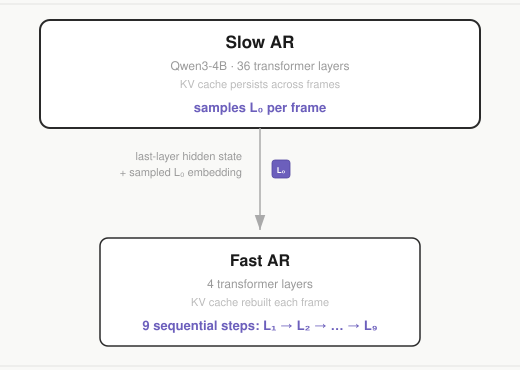
Global + Local Transformer (MOSS-TTS-Local-v1.5). The backbone produces hidden states only — it does not sample any token. All codebook tokens, including \(L_0\), are generated by a lightweight local transformer (1 layer in MOSS). The backbone's hidden state for the current frame enters the local transformer as its initial input; the local transformer then sequentially samples all \(N\) codebook tokens, feeding each sampled code back before sampling the next. The division of labor is not "split codebooks between two models" but "one model for temporal context, one model for all per-frame generation."
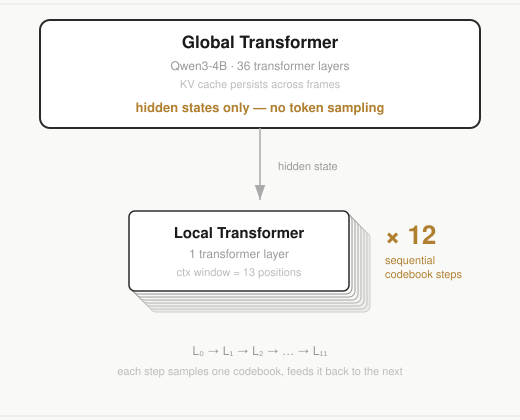
From a serving perspective, both designs share the same scheduling strategy: one backbone forward per frame, a sequential codebook loop in the inner module, no delay/undelay bookkeeping, and the inner loop can be captured as a CUDA Graph. The architectural difference is where \(L_0\) is sampled — in the backbone (Dual AR) or in the inner module alongside all other codebooks (Global + Local).
In summary, delay pattern and backbone + inner module are two ways to avoid the same bad extremes. Delay pattern spreads a frame across a diagonal and undelays it later. Backbone + inner module keeps each frame as a vertical column and moves codebook-level generation into a cheaper inner model.
Model Architectures
After all those preparations, we can finally get to the detailed model architectures and optimizations.
Higgs Pipeline

- Preprocessing (CPU): Text tokenization and reference audio loading as usual.
- Audio Encoder (GPU): Uses HiggsAudioCodec, a DAC-based audio tokenizer with a semantic encoder branch. This tokenizer provides both directions: encoding reference audio into RVQ tokens and decoding generated tokens back to waveform.
- TTS Engine (GPU Backbone): The core autoregressive model — a Qwen3-4B decoder. Each global decode step embeds and sums the previous step's multi-layer token IDs into one input vector, runs one causal backbone forward pass, then uses 8 codebook heads to sample one candidate ID per RVQ layer.
- Vocoder (GPU): Uses the decode direction of the DAC tokenizer to convert generated tokens back into an audible waveform. For Higgs, this does not require deploying another large standalone model instance.
MOSS Pipeline

MOSS-TTS-Local-v1.5 uses a local-transformer architecture to fill the higher level RVQ layers and shares the same high-level four-stage pipeline structure as Higgs.
- Preprocessing (CPU): Text tokenization and reference audio loading, typical TTS. Purely IO-bound.
- Audio Encoder (GPU): Uses MOSS-Audio-Tokenizer-v2, a ~1B-parameter audio tokenizer model. Its encoder direction converts reference audio into discrete RVQ tokens. MOSS-TTS-Local uses 12 RVQ layers plus one text/control channel, so the full grid layout is
[T, 13]. - TTS Engine (GPU Backbone + Local Transformer): The Qwen3 backbone runs once per frame and produces a hidden state — it does not sample any codec token itself. That hidden state is fed into a 1-layer local transformer, which sequentially samples all 13 channels of the frame (one text/control channel plus the 12 RVQ-layer codec tokens, including \(L_0\)), feeding each sampled code back before sampling the next. The 13 sampled embeddings are then summed back as the backbone's next-step input. This keeps the backbone lightweight, while the local transformer's per-frame loop (1 backbone step + 12 local micro-steps, 13 seeded sampling passes) can become the latency bottleneck (see CUDA Graph section).
- Vocoder (GPU): Uses the decode direction of MOSS-Audio-Tokenizer-v2. Logically this is the reverse of the audio encoder, but in serving we deploy a separate MOSS-Audio-Tokenizer-v2 instance for vocoder decoding, rather than reusing the encoder instance. Unlike Higgs's DAC vocoder, it is natively streamable — supporting frame-by-frame decode, with no need for windowed chunking, overlap, or crossfade. However, this extra ~1B-parameter vocoder instance is much heavier than Higgs's DAC vocoder and introduces significant overhead if not properly optimized.
Optimization Implications
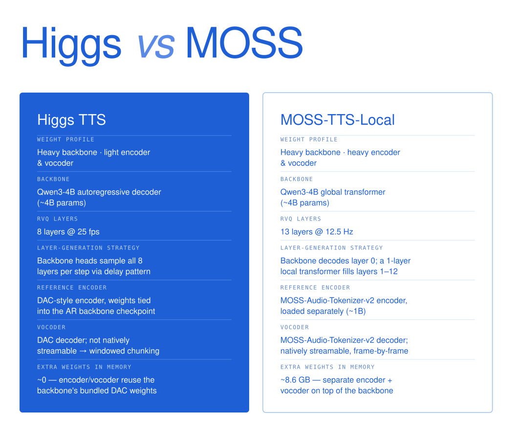
As shown in the picture, both models use a Qwen3-scale backbone (~4B parameters), but differ significantly in encoder/vocoder weight and layer-generation strategy. Higgs is a "heavy backbone, light encoder and vocoder" system: its DAC-based audio tokenizer is small and bundled inside the checkpoint, so the backbone dominates total model size. MOSS pairs a similar-scale backbone with MOSS-Audio-Tokenizer-v2, a much heavier ~1B-parameter audio tokenizer. More importantly, MOSS deploys a separate MOSS-Audio-Tokenizer-v2 instance for vocoder decoding, so vocoder-side optimization becomes much more important. Also, their vocoders have opposite streaming properties — Higgs's DAC vocoder is not natively streamable (requiring windowed chunking with crossfade), whereas MOSS's vocoder supports frame-by-frame streaming out of the box.
One notable observation from our benchmarks (1× H100 80GB, Seed-TTS-Eval EN full set): MOSS streaming does not scale as well as Higgs under higher concurrency. Here, concurrency (
c) is the number of simultaneous in-flight requests, andqps(queries per second) measures end-to-end throughput. At c=16, MOSS streaming reaches only 6.5 qps compared to 10.9 qps in non-streaming mode. The exact root cause is still under investigation, and narrowing this gap is an active area of work.
Those differences directly shape our optimization strategy. At a high level, both models share the same four optimization directions: (1) encoder caching to skip redundant reference-audio encoding, (2) CUDA Graph capture to eliminate per-step kernel launch overhead in AR decode, (3) async CPU–GPU decode to overlap D2H (Device-to-Host, i.e. copying tensors from GPU memory back to CPU memory) synchronization with GPU compute, and (4) vocoder batching and streaming to reduce tail latency and time-to-first-audio. During AR decoding, each step requires a D2H copy to read the generated token, which blocks the GPU; async decode overlaps this transfer with the next step's GPU computation to hide the latency. While both models benefit from all four directions, their architectural differences shift where the biggest wins land. The bullets below explain why each direction matters more for one model than the other from an architecture standpoint; the measured per-stage costs that confirm these predictions are deferred to the profiling section (Where is the Time Actually Spent?).
Note on D2H: D2H (Device-to-Host) means copying data from GPU memory back to CPU memory. During AR decoding, each step must D2H-copy the sampled token ID so the CPU can check for end-of-sequence and prepare the next input. This synchronization blocks the GPU pipeline until the transfer completes.
- Encoder caching is more critical for MOSS: MOSS's ~1B-parameter audio tokenizer makes each reference encode far more expensive than Higgs's small DAC-based tokenizer, so every cache hit saves much more compute.
- AR decode takes a larger share of inference time in Higgs: Although both models share a Qwen3-4B backbone, MOSS runs a heavier codec and generates frames at roughly half the rate of Higgs (12.5 vs 25 fps), so the AR decode stage is a smaller fraction of MOSS's total latency. In Higgs, AR decode dominates, so AR-stage optimizations (such as CUDA Graph capture of the backbone forward pass) yield the biggest relative wins.
- Kernel launch overhead matters more for MOSS: MOSS fills codebook layers sequentially — one backbone step followed by 12 local-transformer micro-steps — rather than decoding multiple codebooks in parallel like Higgs's delay pattern. This sequential design produces many more small kernel launches per frame, so kernel launch overhead accumulates and CUDA Graph capture of the full micro-loop (1 + 12 micro-steps) becomes essential.
- Vocoder optimization is more important for MOSS: MOSS serves vocoder decoding with a separate ~1B-parameter model instance — a far heavier workload than Higgs's lightweight DAC vocoder — so we apply CUDA Graph capture specifically to the MOSS vocoder to cut its per-step launch overhead.
- MOSS encoder and vocoder are distinct models: Unlike Higgs's DAC tokenizer (CNN-based), MOSS-Audio-Tokenizer-v2 is a CNN-free, pure causal-transformer architecture. It uses patchify layers to change frame rates instead of CNN blocks, and all layers use sliding-window attention, which guarantees strict streaming support. The encoder (
1B) and decoder (1B) are architecturally separate models with different weights, packaged together as a ~2B checkpoint for release but not shared. The full MOSS-TTS-Local-v1.5 weight breakdown is ~1B audio encoder + ~4B Qwen3 backbone + ~1B vocoder. A practical serving advantage of the pure-transformer design is that it preserves sequence length throughout computation, making it straightforward to pack sequences for batched inference — reducing overhead under high concurrency or long-tail sequence lengths. CNN-based tokenizers pad inputs and change sequence lengths at each convolutional block, making sequence packing much harder as the number of CNN blocks grows. - Streaming strategy is fundamentally different: While Higgs needs windowed chunking with stride/overlap/holdback to work around DAC's non-streamable vocoder, MOSS's natively streamable vocoder eliminates this entirely, but introduces slot management complexity at high concurrency.
Layer-by-Layer Optimizations
Baseline: SGLang Scheduler and RadixCache
All optimizations in this blog are measured on top of a baseline that already includes SGLang's core serving infrastructure: continuous batching, paged KV cache, RadixAttention for prefix sharing, and CUDA Graph support for the backbone forward pass. This baseline was built up incrementally as we onboarded TTS models onto SGLang-Omni: FishAudio Dual AR was the first (commit 60c6e75, 2026-02-27), followed by full scheduler integration for S2-Pro (commit 92dbd45, 2026-03-09), and Higgs TTS support in PR #428 (commit 4d6be58, 2026-05-17). By the time we began the optimization work described below, both Higgs and MOSS were already running on this scheduler with RadixCache — so these infrastructure features are not counted as optimizations in the benchmark comparisons.
Where is the Time Actually Spent?
We profiled the naive pipelines of MOSS and Higgs right after getting them barely working, before any further optimization. These are the measured per-stage costs behind the architectural predictions above:
Higgs:
- AR Decode Dominates: A typical 10-second speech request requires 250 decode steps. Every single step involves a backbone forward pass, head projection, sampling, and Device-to-Host (D2H) synchronization. A tiny 0.1ms overhead per step inflates end-to-end latency by nearly 25ms.
- The Encoder is Heavy but Static: A single encoding pass takes 50–100ms. However, in production, users often reuse the same reference audio across multiple prompts.
- Vocoder Queuing: The vocoder is fast (~10ms per call), but under high concurrency, multiple AR generation loops finish at the exact same time, creating a massive serial bottleneck at the vocoder stage.
MOSS:
- Frame-local decode dominates: Instead of pure backbone AR steps, each frame requires a global backbone forward pass plus a local transformer micro-loop that sequentially samples 12 RVQ codes with feedback embeddings. The eager (non-CUDA Graph) path is kernel-launch-bound at ~22ms/frame independent of batch size, dominated by the 1 + 12 micro-steps and 13 seeded sampling passes per frame.
- The reference encoder is heavier: MOSS's ~1B-parameter codec takes ~0.25 GPU-seconds per reference encode (vs 50–100ms for Higgs), making audio encoding cache even more critical.
- Vocoder is heavier, but natively streamable: The MOSS-Audio-Tokenizer-v2 decoder supports frame-by-frame streaming, which shifts the streaming bottleneck from "windowed chunking with crossfade" (Higgs) to "frame scheduling and slot management" (MOSS).
With those bottlenecks, our optimization strategies are as follows:
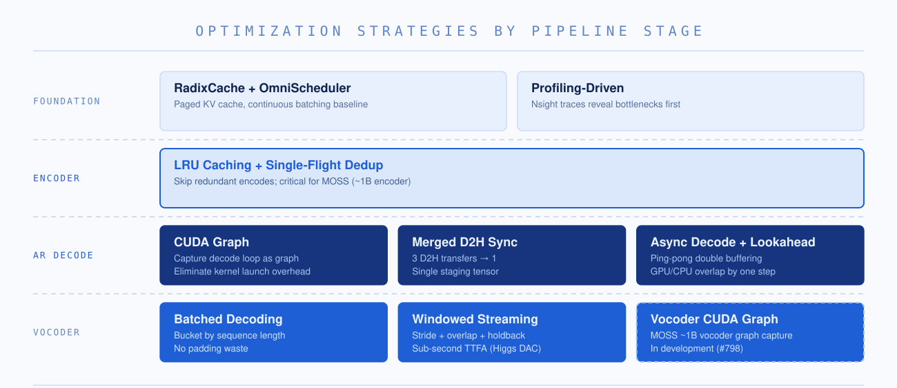
Encoder LRU Caching
The encoder converts a reference audio clip into delayed codec tokens. In production, users frequently reuse the same reference voice across many prompts (e.g., a fixed narrator voice but generate multiple audio contents). Each encoding pass costs 50–100ms of GPU time, but the output is deterministic for identical input audio. This makes it a textbook caching opportunity.
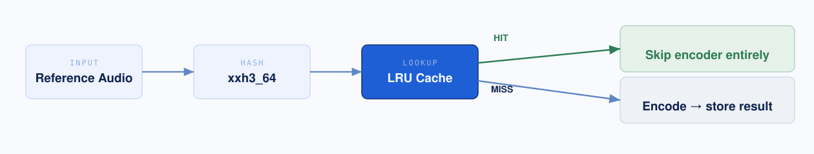
In this sense, we introduce an LRU cache keyed by the audio waveform content. On a cache hit, the encoder stage is skipped entirely. For text, SGLang's RadixCache enables prefix sharing — two prompts that start with the same tokens can reuse partial KV cache. However, audio caching is fundamentally different: there is no meaningful prefix relationship in the time-frequency domain, so we use strictly exact-match lookup. The cache key is a content hash of the input audio: xxh3_64 for raw bytes/base64 input. Two audio clips that produce the same hash are a hit; everything else is a miss.
The cache itself is a small OrderedDict-backed LRU keyed by that content hash (stage_cache.py):
class StageOutputCache:
"""Small in-memory LRU cache for non-AR stage outputs."""
def get(self, key: str | None) -> Any | None:
if key is None:
return None
entry = self._cache.get(str(key))
if entry is None:
return None
self._cache.move_to_end(key) # mark most-recently-used
return entry.data
def _evict_over_budget(self) -> None:
while self.max_size is not None and len(self._cache) > self.max_size:
_, entry = self._cache.popitem(last=False) # drop least-recently-used
self.current_bytes -= entry.size_bytes
self.eviction_count += 1
Two design choices matter here. First, get calls move_to_end on every hit, so the ordering tracks recency, not insertion — eviction with popitem(last=False) always drops the coldest reference voice. Second, the cache is budgeted by both entry count (max_size) and total bytes (max_bytes), because a cached encode is a tensor, not a token list; a content-hash key with a byte budget keeps a long-tail of distinct narrator voices from blowing up GPU/host memory. This is also exactly why the "encoder batching" experiment below was so tempting and so dangerous — it changes the cached value for the same key.
Encoder Batching
On Higgs, we experimented with online batched encoding by bucketing incoming audio by length. While it improved raw throughput on paper, it created a new problem in production: GPU utilization shifted from smooth patterns to intermittent spikes, causing severe resource contention with the concurrent AR decode loops. We ultimately moved batched encoding offline (used strictly for offline inference scenarios) and kept online encoding isolated.
On MOSS, the heavier ~1B encoder makes batching more attractive in theory — the larger per-encode cost means batching amortization should outweigh collection delay. However, when we pursued deeper batching optimizations, we discovered two issues.
First, the throughput gain was illusory. An initial 23% improvement we found on MOSS turned out to be confounded with a cache capacity increase (256 → 1024 entries) in the same commit. After properly controlling variables, batching alone actually hurt throughput by 0.8–4.4%. The reason: to batch audio of different lengths, we must bucket references into length groups and wait for enough samples to fill each bucket. In practice, concurrent requests rarely land in the same bucket, so most "batches" are size 1 or 2 with all the scheduling overhead and none of the throughput benefit.
Second, batched encoding produces different discrete tokens than single-item encoding. Concretely, encode(audio_A) and encode([audio_A, audio_B])[0] return different codec tokens for the same audio — about 5.8% of tokens flip. Logically this should not happen, but the root cause is that changing the batch size changes the M dimension of the underlying BF16 GEMM, which causes cuBLAS to select a different kernel with a different floating-point accumulation order. The resulting sub-ULP drift is normally invisible, but RVQ's hard quantization immediately follows the encoder: for frames near a codebook boundary, a one-bit perturbation is enough to snap to a different codeword, flipping the discrete token. This makes batched encoder caching unsafe and introduces a new source of train-serving skew unique to neural (as opposed to symbolic) tokenizers. For a detailed analysis, see The Root Cause of RL Training-Serving Skew is Pervasive Across Inference Systems.
CUDA Graph
Since AR decode is our primary bottleneck, we need to put the majority of work into optimizing this step. In our implementation, we focused on eliminating kernel launch overhead and synchronization stalls using CUDA Graph and CPU-GPU async decode, respectively. We assume basic familiarity with CUDA Graph here; for the mechanics of capture/replay, multi-graph reuse, and the persistent-buffer tricks behind capturing a Dual-AR TTS model, see our earlier deep dive Revisiting CUDA Graph: Core Mechanisms, Multi-Graph Memory Sharing, and Unified Coverage for Dual AR Models.
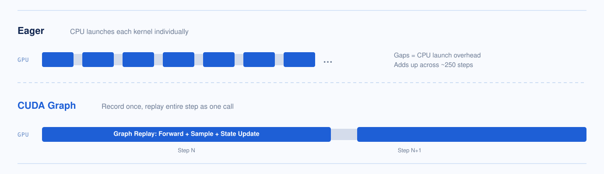
TTS models consist of many tiny modules — sampling, codebook lookup, state updates — and each AR step launches a long sequence of small kernels. In eager mode, the CPU must dispatch each kernel individually, and the launch overhead between kernels adds up across hundreds of decode steps. CUDA Graph eliminates this by recording the entire kernel sequence once and replaying it as a single GPU-side operation, removing per-kernel CPU dispatch entirely.
The static-path challenge. CUDA Graph records a fixed sequence of kernel launches and replays the exact same sequence every time, so the execution path must be fully static — any Python if/else that depends on runtime data breaks the recording. For Higgs, this meant rewriting the delay pattern state machine (which tracks per-request codebook offsets, EOC countdowns, and done flags) from branching Python logic into in-place tensor operations. For MOSS, the frame-decode micro-loop (1 backbone step + 12 local-transformer steps per frame) similarly had to be flattened into a single captured graph with no conditional branching.
Fixed-address shadow buffers. CUDA Graph replays kernels at the exact same memory addresses that were used during recording. But the SGLang scheduler dynamically assigns request slots — a request might be in slot 3 this step and slot 7 the next as requests arrive and finish. To bridge this gap, we pre-allocate a set of fixed-address GPU buffers shaped [max_batch, ...] at server start — one buffer for each piece of per-request decode state (delay counters, EOC countdowns, done flags, last emitted codes, sampled outputs, etc.). These buffers live at permanent addresses that the graph can safely reference on every replay.
Gather → replay → scatter and D2H merging. After each AR decode step, the CPU needs to read back per-request outputs (sampled codec tokens, EOC flags, done status) from the GPU. The D2H transfer pattern improved in three stages:
- Naive baseline (before CUDA Graph): Each request individually calls
.item()or.cpu()inside a Python loop to read its own outputs — sampling results, EOC checks, done flags, etc. With batch size \(B\), this produces \(O(B)\) D2H synchronization points per step, each one stalling the CPU until the GPU finishes. At \(B = 16\), this meant dozens of CUDA sync barriers per step. - After CUDA Graph (gather/scatter): The graph replays the entire batched forward pass and sampling on GPU with zero D2H during execution. Before replay, the runner gathers active requests' state from their scheduler slots into fixed shadow buffers; after replay, it scatters updated state back. Because the graph runs at full
max_batchdimension, inactive slots are masked out. After replay, three batched.cpu()calls read back the results — one for sampled tokens, one for EOC flags, one for done status — reducing the sync count from \(O(B)\) to a constant 3 per step regardless of batch size. - After D2H merging: We further pack all three outputs into a single contiguous staging buffer (
_cg_collect_staging, shaped[max_batch, num_codebooks + 2]) on the GPU. One.cpu()call transfers the entire buffer; the CPU then slices locally to extract tokens, EOC, and done — pure host-side indexing with no further GPU synchronization. This reduces the per-step sync count from 3 to 1, which is also a prerequisite for the async overlap scheduling described next.
The shadow buffers and the merged staging tensor are allocated once at server start, sized to the graph's max batch (higgs_tts/model.py); the + 2 columns are the two completion flags packed alongside the num_codebooks codes:
# higgs_tts/model.py — packs codes_BN | was_done | active_generation_done into one buffer
self._cg_codes_BN = torch.zeros(pool_size, num_codebooks, dtype=torch.long, device=cg_device)
self._cg_collect_staging = torch.zeros(pool_size, num_codebooks + 2, dtype=torch.long, device=cg_device)
The scatter-then-pack step is a single GPU→GPU function — it writes the per-request sampler state back into the pool, then lays the three result tensors side by side in that one staging buffer (higgs_tts/model_runner.py):
# _decode_pack_gpu: all GPU→GPU; returns the device staging buffer
staging = model._cg_collect_staging
staging[:n_real, :num_codebooks] = model._cg_codes_BN[:n_real]
staging[:n_real, num_codebooks] = model._cg_was_done[:n_real]
staging[:n_real, num_codebooks + 1] = model._cg_active_generation_done[:n_real]
return staging
In the synchronous path the runner then does exactly one blocking staging[:n_real].cpu() (model_runner.py#L234-L235); the async path replaces that with a non-blocking copy into a pinned host buffer, which is what makes the next section possible.
Asynchronous Decode + Lookahead
In the vanilla pattern of CPU–GPU synchronization, GPU and CPU process in the same flow and stop to wait for each other. We found this inefficient: the D2H sync time stacks up across hundreds of AR decode steps. To hide the remaining D2H synchronization time, we want a pattern that lets the GPU and CPU work simultaneously instead of waiting for each other.
The async decode splits each step into two halves — a GPU-side launch and a CPU-side resolve — that run one step apart. This idea is inspired by SGLang's overlap scheduler, which hides CPU scheduling overhead behind GPU operators in LLM serving (see also the SGLang v0.4 blog). We apply the same principle to TTS AR decoding: overlap the CPU-side result processing of the previous step with the GPU-side computation of the current step. The resulting timeline is Figure 10 below.
The event loop implements this as: each iteration launches the current step (enqueue GPU work + async D2H + record event), then resolves the previous step (check event, read host buffer, process results). When the batch size drops below 2, it falls back to synchronous execution, since the async fixed overhead will be larger than the performance gains from overlapping.
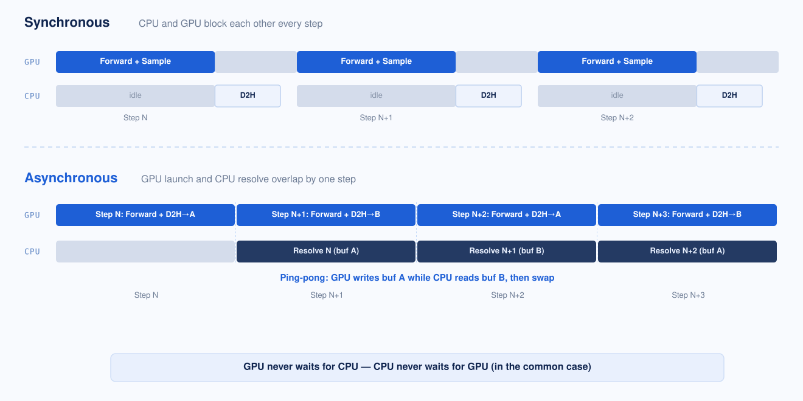
GPU launch (step N): Before replaying the CUDA Graph, the runner gathers each active request's current state (delay counter, last emitted codes, done flag, etc.) from a shared pool into the graph's fixed-address buffers. The graph then runs the forward pass and sampling, writes updated state back to the pool, and packs the step's outputs (all 8 codebook codes plus completion flags) into a single staging tensor. This staging tensor is copied to a pinned host buffer asynchronously — the GPU does not wait for the copy to finish. A CUDA event is recorded right after the copy is enqueued, serving as a "data is ready" signal for the CPU.
CPU resolve (step N-1): While step N runs on the GPU, the CPU processes step N-1's results. It checks the CUDA event (non-blocking) to see if the D2H copy has landed. In the common case it has — the CPU reads the host buffer and runs per-request bookkeeping: appending codes to each request's output, detecting end-of-generation, emitting streaming audio chunks, and removing finished requests. If the copy hasn't landed yet (rare), the CPU blocks briefly until it does.
The ping-pong buffer: Since the GPU is writing step N's results to a host buffer while the CPU is simultaneously reading step N-1's results, they cannot share the same buffer. We allocate two pinned host buffers and alternate between them each step. At step N the GPU writes to buffer A while the CPU reads from buffer B; at step N+1 the roles flip. This avoids a data race that CUDA stream ordering alone cannot prevent — stream ordering governs GPU-side operations, but the CPU's read of pinned memory is not synchronized by the stream.
The whole ping-pong is just two pinned buffers and an alternating index (model_runner/base.py):
def _next_host_staging(self, device_staging: torch.Tensor) -> torch.Tensor:
"""Return a pinned host staging buffer, ping-ponging between two buffers.
Two are required: resolve(N) reads one while launch(N+1)'s async host copy
writes the other — an overlap single-stream ordering does not protect."""
if not self._host_staging_buffers:
self._host_staging_buffers = [
torch.empty(device_staging.shape, dtype=device_staging.dtype,
device="cpu", pin_memory=True)
for _ in range(2)
]
buf = self._host_staging_buffers[self._staging_slot]
self._staging_slot ^= 1 # flip A/B every call
return buf
The launch/resolve split lives in the base runner as execute_launch (enqueue forward + on-GPU sample, then event.record() — never waits on the GPU) and execute_resolve (event.query() first, only event.synchronize() on a miss, then the per-request collect loop) (base.py#L164-L256). The caller — not self — owns the in-flight _PendingStep handle, precisely because launch-first scheduling keeps two steps momentarily alive: the just-launched step N and the not-yet-resolved step N-1.
Lookahead guard: Because launch runs before resolve, a request that finished at step N-1 (via EOC) is still present in step N's batch — the CPU hasn't had a chance to remove it yet. The runner detects this by checking the request's done flag in the pool before launching, and routes finished requests to a dummy padding row. The graph still runs over these slots (CUDA Graph requires a fixed batch shape), but their outputs are discarded during the next resolve. This prevents double-counting finished requests.
Therefore, the CPU and GPU can act as separate workers to allow for greater parallelization, communicating through a shared ping-pong buffer.
Torch Compile
We also evaluated torch.compile as a potential optimization shortcut. However, since our manual CUDA Graph migration had already eliminated the bulk of kernel launch overhead, torch.compile offered only marginal throughput improvements. Plus, it introduced a massive compilation penalty during model warmup, severely damaging our cold-start latency. We ultimately chose to remove it—as a pragmatic engineering trade-off favoring fast system initialization over redundant runtime optimizations.
Vocoder: Optimization and Windowed Streaming
Once codec tokens are ready, the vocoder scheduler routes each request to one of two decode paths depending on whether streaming is enabled: a chunk-by-chunk streaming path for low-latency partial audio emission, or a bucketed batch path for higher-throughput full-utterance decoding.
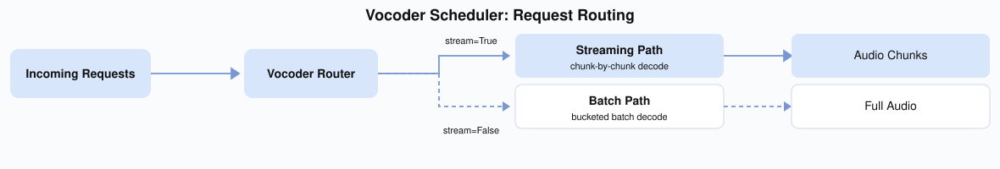
Batched Decoding
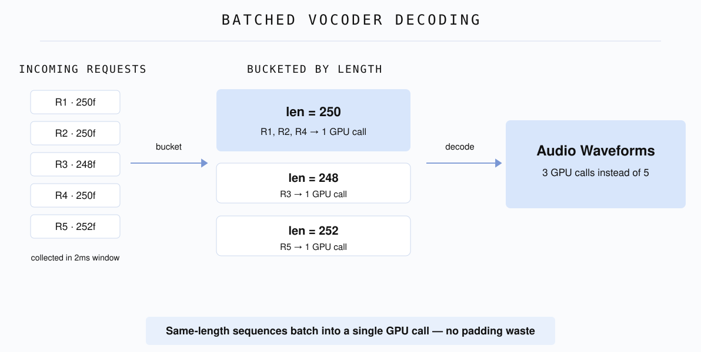
Under high concurrency, multiple AR decode loops finish at nearly the same time — they enter the pipeline together, generate similar-length utterances, and race to the vocoder stage simultaneously. With 16 concurrent requests each taking ~15ms to vocode, the last request in line waits 240ms just for its turn — turning a fast stage into a tail-latency killer.
We batch vocoder calls using a short collection window (max_batch_wait_ms=2 / max_batch_size=4, vocoder_scheduler.py#L43-L48). Before decoding, each request's delayed codes are un-delayed (reversing the delay pattern) and special tokens (BOC/EOC) are clamped to valid codec range. To avoid wasting compute on padding, we use bucketed batching — grouping sequences by length so that each batch contains only same-length items. Sequences that share a length are stacked and decoded in a single GPU call; sequences with unique lengths decode individually. This eliminates the tail-latency problem: instead of 16 serial vocoder calls, we issue a handful of batched calls.
Vocoder CUDA Graph (MOSS Only)
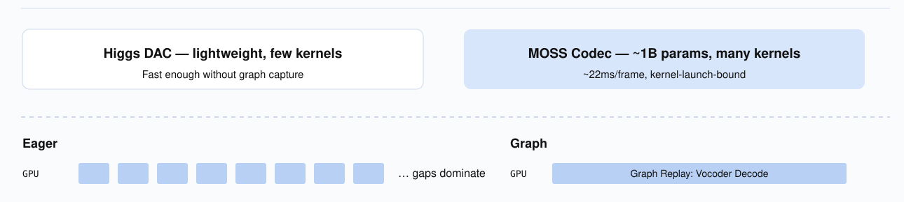
MOSS's vocoder uses a separate ~1B-parameter MOSS-Audio-Tokenizer-v2 instance, which launches far more kernels per decode call than Higgs's lightweight DAC vocoder. Just as with AR decode, kernel launch overhead becomes the bottleneck. Higgs's DAC vocoder is light enough that it does not need this optimization.
We capture the vocoder's decode forward pass as a CUDA Graph, using the same techniques as the AR CUDA Graph — pre-allocated fixed-address buffers, bucketed batch sizes, and graph replay. We won't repeat it here for conciseness.
Windowed Streaming (Higgs Only)
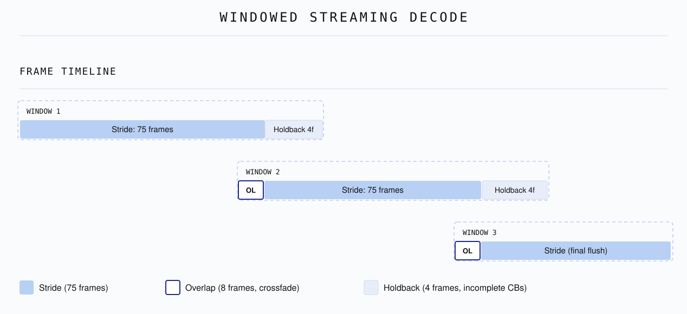
Why: Without streaming, the user hears nothing until the entire AR decode loop completes — hundreds of steps of silence. So we want to stream the process to minimize TTFB (time to first byte). But you can't just naively chop the code sequence into chunks and decode each independently like an LLM: neural audio tokenizers can produce audible clicks at every splice boundary because the vocoder's internal convolution state is disrupted. On top of that, the delay pattern means the trailing rows in any mid-stream snapshot have incomplete high-layer codebooks — decoding them injects noise.
Note that vocoders which natively support streaming decode (such as MOSS's MOSS-Audio-Tokenizer-v2 vocoder) maintain continuous decoder state across the frame, so there are no splice boundary artifacts — the following section only applies to non-streamable vocoders (e.g. Higgs's DAC vocoder).
To manage this irreducible latency boundary smoothly, we tuned three parameters for our streaming window (their defaults live on the Higgs streaming scheduler, vocoder_scheduler.py#L43-L61):
- Stride (75 frames): Accumulates roughly 3 seconds of delayed codes before triggering a vocoder decode step.
- Overlap (8 frames): Looks back into the previous window to eliminate seam artifacts and clicks during audio stitching.
- Holdback (4 frames): Retains trailing frames where high-layer codebooks are still incomplete, preventing noise injection during mid-stream decodes.
Note: These parameters do not fully eliminate boundary artifacts, but reduce them to a barely perceptible level: overlap + crossfade suppresses clicks, and holdback avoids decoding incomplete frames.
All three meet in _decode_delta (vocoder_scheduler.py#L324-L390): for a non-final chunk it emits only up to raw_total - holdback, then starts the next decode window at emitted_raw_frames - overlap — so the held-back tail and the overlap look-back are computed from the same running emitted_raw_frames cursor rather than tracked separately.
For streaming, we accumulate codes until a stride threshold (75 frames, ~3 seconds of audio) before triggering a decode — amortizing kernel launch overhead across a meaningful chunk. When decoding, we overlap by looking 8 frames back into the previously decoded region, re-decoding them jointly with new tokens so the codec sees continuous context across boundaries. We then extract only the delta (new samples past the overlap) and crossfade-blend it with the held-back tail of the previous chunk using a linear fade-in/fade-out envelope — smoothing any residual amplitude mismatch at the splice point.
Finally, a holdback of 4 frames retains the trailing rows where high-layer codebooks are still filling in due to the delay pattern. These incomplete rows are only released on the final flush when the full sequence is available.
The delay pattern also creates an irreducible startup cost: the vocoder needs at least N rows (N = number of codebooks) just to reverse the pattern and produce the first audio frame. Combined with the stride, the actual TTFB lands at ~300–400ms at our measured RTF — well under the 500ms conversational threshold.
Benchmark Results
We benchmarked both Higgs and MOSS-TTS-Local to quantify the speedup from our optimizations. Each model is tested in two builds: vanilla (all optimizations off) vs perf (all optimizations on).
Environment: 1× H100 80GB, colocate single-GPU. Seed-TTS-Eval EN full set (N=1088). Each data point is the mean of 3 runs.
Higgs TTS — Streaming (vanilla vs perf)
| Concurrency | qps vanilla | qps perf | Speedup | RTF van / perf | Latency mean (s) van / perf | TTFP (ms) van / perf |
|---|---|---|---|---|---|---|
| 2 | 1.286 | 2.908 | 2.26× | 0.373 / 0.166 | 1.555 / 0.688 | 162 / 153 |
| 4 | 2.411 | 5.934 | 2.46× | 0.393 / 0.163 | 1.658 / 0.673 | 166 / 109 |
| 8 | 4.313 | 9.856 | 2.29× | 0.442 / 0.196 | 1.852 / 0.810 | 182 / 126 |
| 16 | 7.077 | 14.634 | 2.07× | 0.533 / 0.261 | 2.247 / 1.088 | 214 / 176 |
Optimizations deliver a stable ~2.1–2.5× throughput gain across all concurrency levels, with RTF roughly halved and first-audio latency (TTFP) also reduced.
Higgs TTS — Non-streaming (vanilla vs perf)
| Concurrency | qps vanilla | qps perf | Speedup | RTF van / perf | Latency mean (s) van / perf |
|---|---|---|---|---|---|
| 2 | 1.412 | 2.941 | 2.08× | 0.342 / 0.164 | 1.416 / 0.680 |
| 4 | 2.552 | 5.715 | 2.24× | 0.372 / 0.166 | 1.568 / 0.699 |
| 8 | 4.426 | 10.077 | 2.28× | 0.423 / 0.191 | 1.771 / 0.793 |
| 16 | 8.156 | 15.174 | 1.86× | 0.464 / 0.245 | 1.937 / 1.028 |
MOSS-TTS-Local-v1.5 — Streaming (vanilla vs perf)
| Concurrency | qps vanilla | qps perf | Speedup | RTF van / perf | Latency mean (s) van / perf | TTFP (ms) van / perf |
|---|---|---|---|---|---|---|
| 2 | 0.817 | 2.782 | 3.40× | 0.561 / 0.165 | 2.448 / 0.719 | 257 / 67 |
| 4 | 1.444 | 3.933 | 2.72× | 0.635 / 0.233 | 2.768 / 1.016 | 280 / 90 |
| 8 | 2.089 | 5.421 | 2.60× | 0.887 / 0.338 | 3.848 / 1.472 | 626 / 146 |
| 16 | 2.516 | 6.535 | 2.60× | 1.495 / 0.566 | 6.337 / 2.437 | 3452 / 1311 |
MOSS-TTS-Local-v1.5 — Non-streaming (vanilla vs perf)
| Concurrency | qps vanilla | qps perf | Speedup | RTF van / perf | Latency mean (s) van / perf |
|---|---|---|---|---|---|
| 2 | 0.968 | 2.606 | 2.69× | 0.475 / 0.178 | 2.069 / 0.767 |
| 4 | 1.816 | 6.247 | 3.44× | 0.504 / 0.148 | 2.200 / 0.640 |
| 8 | 3.017 | 9.651 | 3.20× | 0.606 / 0.192 | 2.645 / 0.827 |
| 16 | 4.668 | 10.883 | 2.33× | 0.781 / 0.347 | 3.406 / 1.465 |
Reproducing the Benchmarks
The benchmarks use benchmarks/eval/benchmark_tts_seedtts.py from the sglang-omni repository.
1. Start the server (one GPU per server instance, colocate single-card):
# Higgs — perf (all optimizations on, default config)
CUDA_VISIBLE_DEVICES=0 sgl-omni serve \
--model-path bosonai/higgs-audio-v3-tts-4b \
--port 8101 --allowed-local-media-path /tmp
# Higgs — vanilla (CUDA graph off, async decode off)
# Use a config with runtime_overrides:
# tts_engine.enable_async_decode: false
# tts_engine.server_args_overrides.disable_cuda_graph: true
CUDA_VISIBLE_DEVICES=1 sgl-omni serve \
--model-path bosonai/higgs-audio-v3-tts-4b \
--config higgs_vanilla.yaml \ # example config; adjust path to your own
--port 8102 --allowed-local-media-path /tmp
# MOSS — perf (all optimizations on, default config)
CUDA_VISIBLE_DEVICES=2 sgl-omni serve \
--model-path OpenMOSS-Team/MOSS-TTS-Local-Transformer-v1.5 \
--port 8103 --allowed-local-media-path /tmp
# MOSS — vanilla (AR CUDA graph off, vocoder CUDA graph off, frame-sampler compile off)
# Use a config with:
# cuda_graph: false (disables vocoder CUDA graph)
# tts_engine.server_args_overrides.disable_cuda_graph: true (disables AR graph + frame graph)
CUDA_VISIBLE_DEVICES=3 sgl-omni serve \
--model-path OpenMOSS-Team/MOSS-TTS-Local-Transformer-v1.5 \
--config moss_local_vanilla.yaml \ # example config; adjust path to your own
--port 8104 --allowed-local-media-path /tmp
2. Run the benchmark (against a running server):
# Sweep concurrency {2,4,8,16}, 3 runs per point
MODEL=bosonai/higgs-audio-v3-tts-4b # MOSS: OpenMOSS-Team/MOSS-TTS-Local-Transformer-v1.5
PORT=8101; LABEL=higgs_perf_stream
STREAM=--stream # non-streaming: leave empty
EXTRA="" # MOSS only: EXTRA="--token-count auto"
for c in 2 4 8 16; do
for r in 1 2 3; do
python -m benchmarks.eval.benchmark_tts_seedtts \
--use-existing-server --generate-only \
--base-url http://localhost:$PORT --model $MODEL \
--ref-format references --lang en --max-concurrency $c \
--output-dir results/${LABEL}_c${c}_r${r} $STREAM $EXTRA
done
done
Single-run example (Higgs perf streaming, c=4):
python -m benchmarks.eval.benchmark_tts_seedtts \
--use-existing-server --generate-only \
--base-url http://localhost:8101 \
--model bosonai/higgs-audio-v3-tts-4b \
--ref-format references --lang en --max-concurrency 4 \
--output-dir results/higgs_perf_stream_c4 --stream
Results are in <output-dir>/speed_results.json under summary: throughput_qps, latency_mean_s, latency_p95_s, rtf_mean. Streaming runs also report audio_ttfp_mean_s (time to first audio). Average the 3 runs per (label, concurrency) to get the table values above.
Summary
- Higgs (stream & non-stream): Stable ~1.9–2.5× speedup in both modes. Stream ≈ non-stream throughput — the cleanest win across all four quadrants.
- MOSS non-streaming: ~2.7–3.4× across most of the sweep, narrowing to ~2.3× at the highest concurrency (c=16).
- MOSS streaming: ~3.4× at low concurrency, settling to ~2.6× as concurrency rises. Improving streaming scalability is on the roadmap.
Conclusion
The best system optimizations don't come from blindly applying trendy techniques; they come from a deep understanding of the theory, desire for building elegant systems, and clean engineering trade-offs.
If you are interested in our project, please go to sglang-omni repo to give it a try, to experience the exhilarating performance. If you are interested in making a contribution, I'd love to talk, please don't hesitate to reach out.
Join Us
SGLang-Omni is an open community project, and it is still growing fast. Cross-node multi-stage pipelines, fuller diffusion-stage support, and end-to-end RL training integration are all underway. If multi-stage inference is the kind of problem you find beautiful — whether you come from a systems background or arrive halfway, whether you specialize in kernel optimization or scheduling logic — we are actively recruiting contributors. Come build a truly industrial-grade omni-serving stack with us: open a PR, join the discussion, or say hi in the community channels linked below.
Acknowledgments
SGLang-Omni — Haoguang Cai, Shangming Cai, Qiujiang Chen, Yuhao Chen, Jiaxin Deng, Wenyao Gao, Yifei Gao, Jingwen Gu, Yitong Guan, Zhihao Guo, Chenchen Hong, Hao Jin, Xinli Jing, Xiangrui Ke, Shenggui Li, Junrong Lin, Estella Liu, Xinyu Lu, Yuan Luo, Ratish Palanisamy, Mick Qian, JinTao Qu, Shuai Shi, Yijiang Tian, Chao Wang, Richard Wang, Shuwen Wang, Zijie Xia, Yuhao Yang, Xuesong Ye, Fan Yin, Yue Yin, Gaokai Zhang, Xiaoyu Zhang, Yichi Zhang, Chenyang Zhao.
Higgs Audio v3 TTS (Boson AI) — Mu Li, Alex Smola, Lindsey Allen. Silin Meng, Ke Bai. Ruskin Raj Manku, Huapeng Zhou, Dongming Shen, Jonah Mackey, Erik Li, Weisu Yin, Yizhi Liu, Xinyu Wang, Hao Yu.
MOSS-TTS Local-Transformer-v1.5 (MOSI.AI) — Yitian Gong, Kuangwei Chen, Zhicheng Zhang, Botian Jiang, Yiyang Zhang, Kang Yu, Yang Gao, Xiaogui Yang, Qinyuan Chen, Zhaoye Fei, Shimin Li, Xipeng Qiu.
Learn More
- Model (Higgs): boson-sglang/higgs-audio-v3-generation-4B-base
- Model (MOSS): OpenMOSS-Team/MOSS-TTS-Local-Transformer-v1.5
- Serving framework: SGLang-Omni on GitHub
- Documentation: SGLang-Omni docs · Higgs TTS cookbook
- Higgs optimization roadmap: #478
- MOSS optimization roadmap: #637
- Design background: SGLang-Omni: Redesigning the Inference Framework for Multi-Stage Generative Models